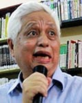

Hướng đến nền giáo dục thực học
Trong công cuộc đổi mới căn bản và toàn diện nền giáo dục nước nhà, việc xây dựng chương trình giáo dục phổ thông mới (dự kiến áp dụng sau năm 2015) là một nhiệm vụ chủ yếu và hết sức quan trọng.
Giáo dục là cuộc sống
Đất nước ta tiến hành cuộc đổi mới từ năm 1986 bằng việc thay thế cơ chế quan liêu bao cấp bằng cơ chế thị trường theo định hướng xã hội chủ nghĩa. Nền giáo dục đã không theo kịp sự đổi mới của đất nước nên chưa xác định được triết lý giáo dục mới đáp ứng mọi nhu cầu của đất nước trong thời kỳ mới. Đó là nguyên nhân sâu xa dẫn tới sự thất bại của các cuộc cải cách và đổi mới giáo dục vừa qua.
Giờ đây, để xây dựng chương trình giáo dục phổ thông mới, việc đầu tiên là phải xác định triết lý giáo dục mới cho nó. Triết lý này cần xuất phát từ quan điểm nổi tiếng của John Dewey (1859-1952, nhà giáo dục Mỹ): “Giáo dục chính là bản thân cuộc sống”; phải đáp ứng được tiêu chí phát triển của đất nước hiện nay là “dân giàu, nước mạnh, dân chủ, công bằng, văn minh”; đồng thời chiếu theo bốn trụ cột của sứ mệnh giáo dục quốc tế cho thế kỷ 21 là “Học để biết (learning to know), học để làm (learning to do), học để cùng chung sống (learning to live together) và học để sinh tồn (learning to be)”. Theo đó, triết lý này cần thể hiện quan điểm “dạy và học những gì mà xã hội cần, không phải những gì mà người thầy có”. Từ các triết lý trên có thể đề nghị bốn thuộc tính của nền giáo dục Việt Nam là “thực học, dân chủ, dân tộc và khai phóng”.
“Thực học” đối với các nước tiên tiến từ lâu đã trở thành lẽ đương nhiên không cần đề xướng. Nhưng đối với Việt Nam, nơi mà truyền thống học để thi đỗ làm quan cùng với tệ nạn dạy học giả để đạt những giá trị giả mà lấy bằng cấp thật vẫn đang ngự trị xã hội thì việc nhấn mạnh thuộc tính này là rất cần thiết. Thuộc tính này chính là “bốn trụ cột” mà UNESCO đã khẳng định.
“Dân chủ” cũng là một thuộc tính cần nhấn mạnh để vạch rõ một nền giáo dục nhằm mục tiêu phục vụ cuộc sống của nhân dân, bao gồm cá nhân, gia đình và xã hội. Với ý nghĩa đó, dân chủ đồng thời mang tính chất nhân bản, nó đòi hỏi việc quản lý điều hành giáo dục phải được thực hiện bằng cơ chế dân chủ-khoa học thay cho cơ chế quan liêu-bao cấp hiện hành.
“Dân tộc” luôn luôn là thuộc tính không thể thiếu của giáo dục. Bởi vì trong một thế giới mà sự hội nhập quốc tế đã trở thành động lực đương nhiên của sự phát triển thì việc bảo vệ chủ quyền và bản sắc dân tộc trở nên vô cùng quan trọng. Do đó nền giáo dục quốc dân phải giữ vững truyền thống và thấm nhuần bản sắc dân tộc, để tạo nên một giá trị cơ bản của dân tộc cho các thế hệ tương lai của đất nước.
“Khai phóng” là một thuộc tính hết sức cần thiết đối với giáo dục nước ta xét trên cả bình diện đối nội và đối ngoại. Ở trong nước, thuộc tính này đòi hỏi tầm nhìn cởi mở phóng khoáng đối với mọi ý tưởng hay phát minh sáng chế, tránh sự ràng buộc hay áp đặt của những tư tưởng bảo thủ lỗi thời; còn đối với bên ngoài, “khai phóng” có nghĩa là mở rộng hội nhập quốc tế, tiếp thu khoa học hiện đại để áp dụng vào thực tiễn Việt Nam.
Nói chung, đó là triết lý của một nền giáo dục dân chủ.
“Trói” hoạt động nhà trường vào bộ SGK
Có nhiều nguyên nhân dẫn đến những sự thất bại trước đây của các cuộc cải cách và đổi mới giáo dục nói chung cũng như của việc đổi mới chương trình học nói riêng, nhưng nguyên nhân chủ yếu nằm ở cơ chế quản lý điều hành nặng tính quan liêu-bao cấp chưa được tháo gỡ.
Đối với chương trình học, cơ chế này được thể hiện qua sự độc quyền học vấn bằng nguyên tắc “một chương trình, một bộ sách giáo khoa (SGK) thống nhất”, dẫn tới sự lẫn lộn về chức năng của chương trình học với chức năng của SGK và được vận hành bằng quan điểm chỉ đạo “SGK là pháp lệnh”. Chính cái cơ chế dẫn đến nguyên tắc và quan điểm đó đã trói buộc hoạt động dạy học trong nhà trường vào bộ SGK, biến chương trình học thành đề cương biên soạn sách, biến giáo viên thành công cụ thuyết minh các cuốn sách, dẫn đến lối dạy học “đọc-chép” trong nhà trường, làm cho học sinh phải học thuộc lòng những vỏ kiến thức rỗng.
Khoa học giáo dục hiện đại phân biệt rất rõ ràng chức năng của chương trình học với chức năng của SGK. Chương trình học là văn bản pháp lý (mà ta vẫn gọi là “pháp lệnh”) buộc giáo viên phải tuân thủ; còn SGK, mặc dù được biên soạn dựa trên chương trình, chỉ là công cụ để giáo viên và học sinh sử dụng trong quá trình dạy học. Vì vậy, ở các nước tiên tiến, cơ quan quản lý giáo dục chỉ nghiên cứu và biên soạn chương trình học để cấp cho giáo viên thực hiện; còn việc biên soạn SGK thì dành cho tất cả những ai có năng lực. Khi thiết kế bài học (tức là soạn giáo án), giáo viên có quyền lựa chọn SGK thích hợp với mình, hoặc viết và dùng sách của chính mình. Từ khi có mạng Internet, trên thế giới đã xuất hiện khuynh hướng dạy học không cần SGK.
Thực trạng giáo dục Việt Nam đã chỉ ra rằng: Phải tách bạch chức năng của chương trình học với chức năng của SGK, dứt khoát từ bỏ nguyên tắc “một chương trình-một bộ SGK thống nhất” để chuyển sang áp dụng nguyên tắc “một chương trình-nhiều bộ SGK”, thay quan điểm “SGK là pháp lệnh” bằng quan điểm “chương trình học là pháp lệnh”. Mọi hoạt động dạy học, thi cử, thanh tra giáo dục… đều dựa trên chương trình học chứ không chiếu theo SGK.
Đối với việc quản lý điều hành giáo dục nói chung, cơ chế quan liêu-bao cấp vẫn đang tồn tại chính là nguyên nhân tạo nên sự giả dối trong giáo dục, kìm hãm sự chủ động và sáng tạo trong nhà trường và tước mất quyền làm chủ của nhà giáo trong các hoạt động chuyên môn nghiệp vụ. Vì vậy cơ chế này cần được xóa bỏ để thay thế bằng cơ chế quản lý dân chủ-khoa học. Theo đó, cần bãi bỏ những mệnh lệnh hành chính với những chỉ tiêu chủ quan áp đặt từ trên xuống, đưa thi đua vào đúng thực chất của việc dạy tốt, học tốt với chất lượng thực sự, trả lại vai trò chủ thể giáo dục cho các nhà trường ở cơ sở mà nhân vật quan trọng nhất là các nhà giáo.
Từ bỏ di sảnquan liêu-bao cấp
Việc xây dựng chương trình phải được giao cho những chuyên gia về phát triển chương trình học (curriculum development) thực hiện theo các nguyên lý khoa học. Đồng thời, các cấp lãnh đạo ngành giáo dục cần thể hiện quyết tâm đổi mới tư duy về giáo dục phổ thông, từ bỏ những di sản của cơ chế quan liêu bao cấp trong quản lý điều hành giáo dục, chuyển sang thực hiện cơ chế dân chủ-khoa học, trao quyền chủ động sáng tạo cho giáo viên đứng lớp ở nhà trường trong khuôn khổ những quy định của chương trình học.
Sau khi hoàn thành, chương trình giáo dục phổ thông mới sẽ được trình bày trong một ấn phẩm để xuất bản và phát hành cho giáo viên thực hiện. Giáo viên sẽ căn cứ vào chương trình của Bộ và mọi nguồn tư liệu hiện có (kể cả SGK hiện hành) để thiết kế bài học (course design) tức soạn giáo án giảng dạy cho học sinh bằng trình độ chuyên môn và khả năng sư phạm của chính mình. Việc biên soạn SGK tương thích với chương trình mới sẽ dành cho bất cứ nhà chuyên môn nào có khả năng thực hiện và khi ấy đương nhiên sẽ có nhiều bộ SGK cho một bộ môn. Quyền lựa chọn SGK cho việc dạy học hoàn toàn thuộc về giáo viên và học sinh.
Với cơ chế quản lý dân chủ-khoa học được xác lập, một nền giáo dục trung thực với vai trò chủ động sáng tạo của giáo viên sẽ đảm bảo cho việc nâng cao chất lượng giáo dục phổ thông của đất nước.